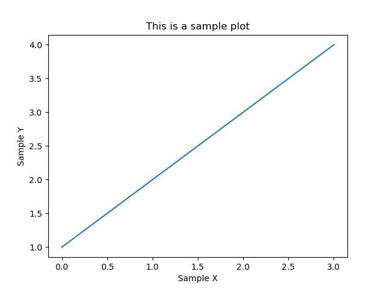

Note
Click here to download the full example code
This is a sample plot¶
Make a simple x-y plot

import matplotlib.pyplot as plt
plt.plot([1,2,3,4])
plt.ylabel('Sample Y')
plt.xlabel('Sample X')
plt.title('This is a sample plot')
plt.savefig('sample.png',bbox_inches='tight',pad_inches=0.25)
Total running time of the script: ( 0 minutes 0.347 seconds)